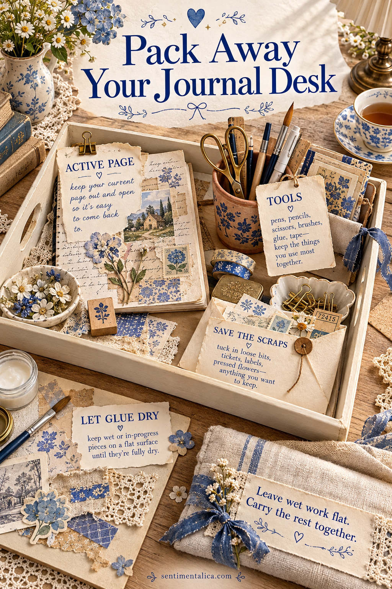
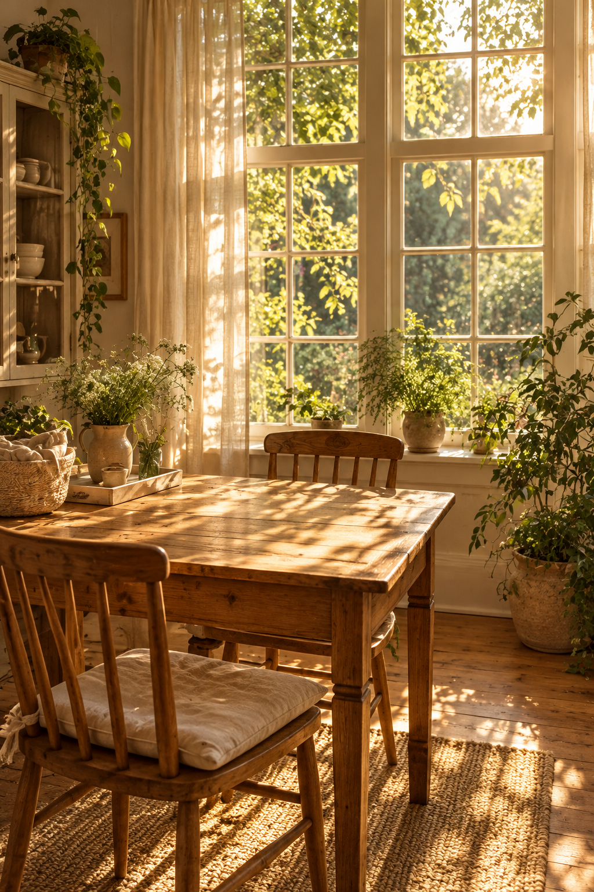

When your journal desk is also the dining table, beginning can feel like unpacking a whole cupboard. A portable working tray makes the transition smaller. Give the active page, everyday tools, loose offcuts, and drying work their own places, then practise putting everything away once before you begin. The aim is a setup you can return to easily, even when the table has another job.

Choose the Tray Around Your Page
Use a tray or shallow box you already own and lay your open journal inside it. The page should fit without bending, with enough room to lift it by the edges. If the journal is larger than the tray, let the tray carry the supplies and use a separate flat board for the book.
Check the route to the storage shelf while the tray is empty. Make sure you can carry it comfortably and set it down without tilting. A beautiful arrangement is less useful if moving it requires two trips or a cleared cupboard every time.
Leave the next action visible, so setting up also tells you where to begin.
Keep an Active Sheet Zone
Reserve the widest clear area for today's work. Place a protective sheet beneath the journal or loose page and keep the surface mostly empty. Choose the papers for one session, not every paper you might someday use. A small working selection is easier to see and easier to return.
If you are between projects, put a plain card on top with the next action written on it: ‘add the date,’ ‘choose a photograph,’ or ‘attach the pocket.’ This is a reminder you make yourself, not another elaborate planning system. It helps the next session begin at a specific point.

Give Small Tools and Offcuts Separate Homes
A low cup can hold a pen, pencil, and the few tools you regularly reach for. Keep it stable and avoid packing it so tightly that retrieving one tool pulls out several. Store scissors closed in a suitable holder or separate compartment rather than loose under the journal.
For offcuts, use one envelope. Slip in paper fragments large enough that you would actually use them, then put the rest in your normal paper recycling or waste container. Label the envelope ‘this project’ if your scraps are chosen for a particular spread. Empty or review it when that project finishes.
Plan for Work That Cannot Move Yet
Give drying work a flat board or other suitable surface near the tray's storage place. Follow the directions on your chosen adhesive or medium before stacking or closing a page. A surface that appears dry can still be inconvenient to press against another piece of paper.
The drying place is part of the setup, even if it sits outside the tray. Mark it with a small note when necessary so someone sharing the space knows that the sheet is still in progress. Do not balance a wet page on top of tools simply because everything must leave the table.
Make Shutdown a Short Sequence
Return tools first, slide usable offcuts into the envelope, and move drying work onto its flat surface. Place the unfinished page on top of the tray contents only when it is ready to travel. Add the next-action card where you will see it, then lift the tray and check the table for tiny scraps.
Time one ordinary shutdown if you want to understand where it slows down. If most of the effort goes into sorting paper, take out fewer sheets next time. If storage is awkward, change the shelf rather than adding containers. A journal station that packs away in minutes comes from clear places and a small working selection; its decoration can wait until the routine feels easy.
Find more gentle paper projects in the Sentimentalica journal.